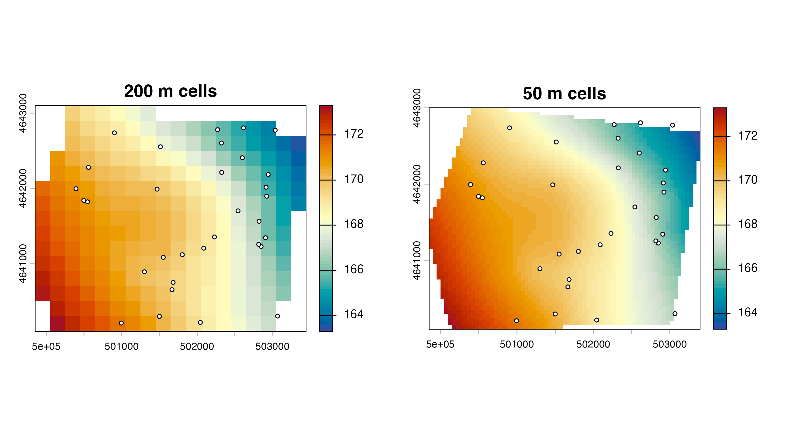
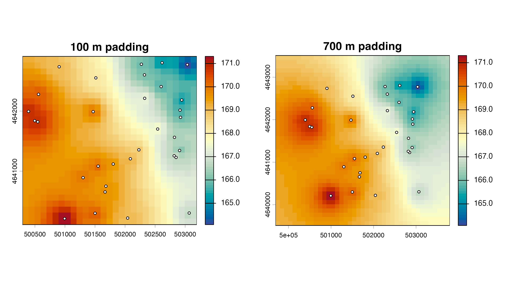
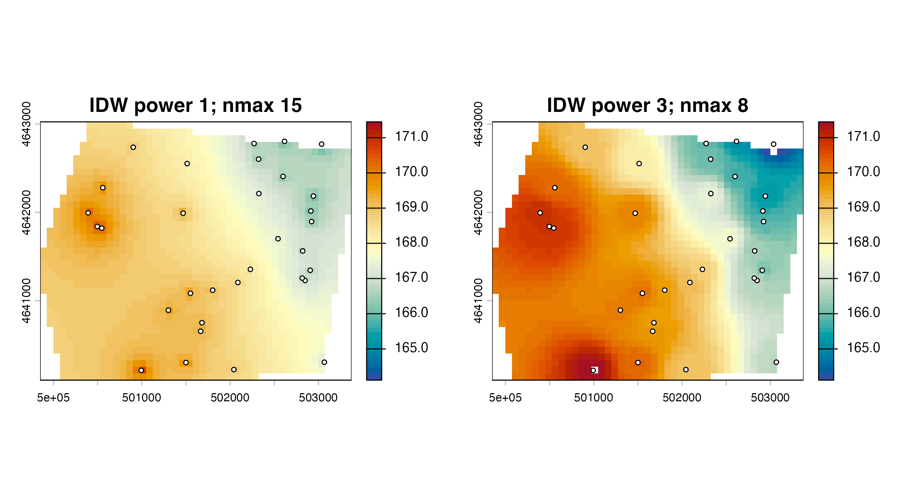

Interpolation parameters and common grid geometry
interpolation-parameters.RmdParameters define the numerical and spatial problem. Record them with each monitoring event. More cells or a smoother image do not create new observations.
Coarse and fine resolution
coarse <- ps_interpolate(points, "Z", "TPS", grid_res = 200, mask = aoi, padding = 0)$TPS
#> Warning:
#> Grid searches over lambda (nugget and sill variances) with minima at the endpoints:
#> (GCV) Generalized Cross-Validation
#> minimum at right endpoint lambda = 1.812476e-05 (eff. df= 30.40003 )
fine <- ps_interpolate(points, "Z", "TPS", grid_res = 50, mask = aoi, padding = 0)$TPS
#> Warning:
#> Grid searches over lambda (nugget and sill variances) with minima at the endpoints:
#> (GCV) Generalized Cross-Validation
#> minimum at right endpoint lambda = 1.812476e-05 (eff. df= 30.40003 )
data.frame(
grid = c("coarse", "fine"),
cell_size_m = c(res(coarse)[1], res(fine)[1]),
cells = c(ncell(coarse), ncell(fine)),
cells_with_values = c(global(coarse, "notNA")[[1]], global(fine, "notNA")[[1]])
)
#> grid cell_size_m cells cells_with_values
#> 1 coarse 200 270 238
#> 2 fine 50 4118 3497
shared <- range(minmax(coarse), minmax(fine))
par(mfrow = c(1, 2), mar = c(3, 3, 3, 1))
plot(coarse, col = head_cols, range = shared, main = "200 m cells")
plot(points, add = TRUE, pch = 21, bg = "white", cex = .6)
plot(fine, col = head_cols, range = shared, main = "50 m cells")
plot(points, add = TRUE, pch = 21, bg = "white", cex = .6)
Padding and the AOI mask
Padding expands the prediction extent around the point or AOI extent. A mask then limits the published footprint to the analysis polygon.
pad_small <- ps_interpolate(points, methods = "IDW", grid_res = 100, padding = 100)$IDW
#> [inverse distance weighted interpolation]
pad_large <- ps_interpolate(points, methods = "IDW", grid_res = 100, padding = 700)$IDW
#> [inverse distance weighted interpolation]
rbind(
small_padding = as.vector(ext(pad_small)),
large_padding = as.vector(ext(pad_large))
)
#> xmin xmax ymin ymax
#> small_padding 500293.2 503193.2 4640110 4642910
#> large_padding 499693.2 503793.2 4639510 4643510
par(mfrow = c(1, 2), mar = c(3, 3, 3, 1))
plot(pad_small, col = head_cols, main = "100 m padding")
plot(points, add = TRUE, pch = 21, bg = "white", cex = .6)
plot(pad_large, col = head_cols, main = "700 m padding")
plot(points, add = TRUE, pch = 21, bg = "white", cex = .6)
Predictions outside the support of the monitoring network are extrapolations, regardless of whether a rectangular raster is displayed.
IDW power and neighbor limit
idw_1 <- ps_interpolate(points, methods = "IDW", grid_res = 75, mask = aoi,
padding = 0, idw_power = 1, idw_nmax = 15)$IDW
#> [inverse distance weighted interpolation]
idw_3 <- ps_interpolate(points, methods = "IDW", grid_res = 75, mask = aoi,
padding = 0, idw_power = 3, idw_nmax = 8)$IDW
#> [inverse distance weighted interpolation]
data.frame(
setting = c("power 1, nmax 15", "power 3, nmax 8"),
minimum = c(minmax(idw_1)[1], minmax(idw_3)[1]),
maximum = c(minmax(idw_1)[2], minmax(idw_3)[2])
)
#> setting minimum maximum
#> 1 power 1, nmax 15 166.1038 170.7168
#> 2 power 3, nmax 8 164.1141 171.4498
shared <- range(minmax(idw_1), minmax(idw_3))
par(mfrow = c(1, 2), mar = c(3, 3, 3, 1))
plot(idw_1, col = head_cols, range = shared, main = "IDW power 1; nmax 15")
plot(points, add = TRUE, pch = 21, bg = "white", cex = .6)
plot(idw_3, col = head_cols, range = shared, main = "IDW power 3; nmax 8")
plot(points, add = TRUE, pch = 21, bg = "white", cex = .6)
TPS and kriging controls
tps_fixed <- ps_interpolate(
points, methods = "TPS", grid_res = 100, mask = aoi, padding = 0,
tps_lambda = 0.001
)$TPS
#> Warning:
#> Grid searches over lambda (nugget and sill variances) with minima at the endpoints:
#> (GCV) Generalized Cross-Validation
#> minimum at right endpoint lambda = 1.812476e-05 (eff. df= 30.40003 )
ok_manual <- ps_interpolate(
points, methods = "OK", grid_res = 100, mask = aoi, padding = 0,
kr_auto_cutoff = FALSE, kr_cutoff = 1400, kr_width = 100
)$OK
#> Warning in gstat::fit.variogram(empirical, model0, fit.sills = TRUE, fit.ranges
#> = TRUE, : No convergence after 200 iterations: try different initial values?
#> [using ordinary kriging]
data.frame(
surface = c("TPS lambda 0.001", "OK cutoff 1400 m; width 100 m"),
minimum = c(minmax(tps_fixed)[1], minmax(ok_manual)[1]),
maximum = c(minmax(tps_fixed)[2], minmax(ok_manual)[2])
)
#> surface minimum maximum
#> 1 TPS lambda 0.001 163.2412 173.2436
#> 2 OK cutoff 1400 m; width 100 m 164.0487 171.5621tps_lambda = NULL delegates smoothing selection to
fields::Tps() by GCV. Kriging lag choices affect the
empirical variogram and fit. Inspect warnings; do not treat automatic or
manually supplied settings as validation.
Reuse one template
template <- rast(crs = crs(points), ext = ext(aoi), resolution = 100)
same_grid <- ps_interpolate(
points, methods = c("TPS", "IDW"), template = template, mask = aoi
)
#> Warning:
#> Grid searches over lambda (nugget and sill variances) with minima at the endpoints:
#> (GCV) Generalized Cross-Validation
#> minimum at right endpoint lambda = 1.812476e-05 (eff. df= 30.40003 )
#> [inverse distance weighted interpolation]
compareGeom(same_grid$TPS, same_grid$IDW, stopOnError = FALSE)
#> [1] TRUECommon geometry is essential for cell-by-cell differences and repeated-event comparisons. Save the template or its CRS, extent, resolution, origin, and mask with the project record.